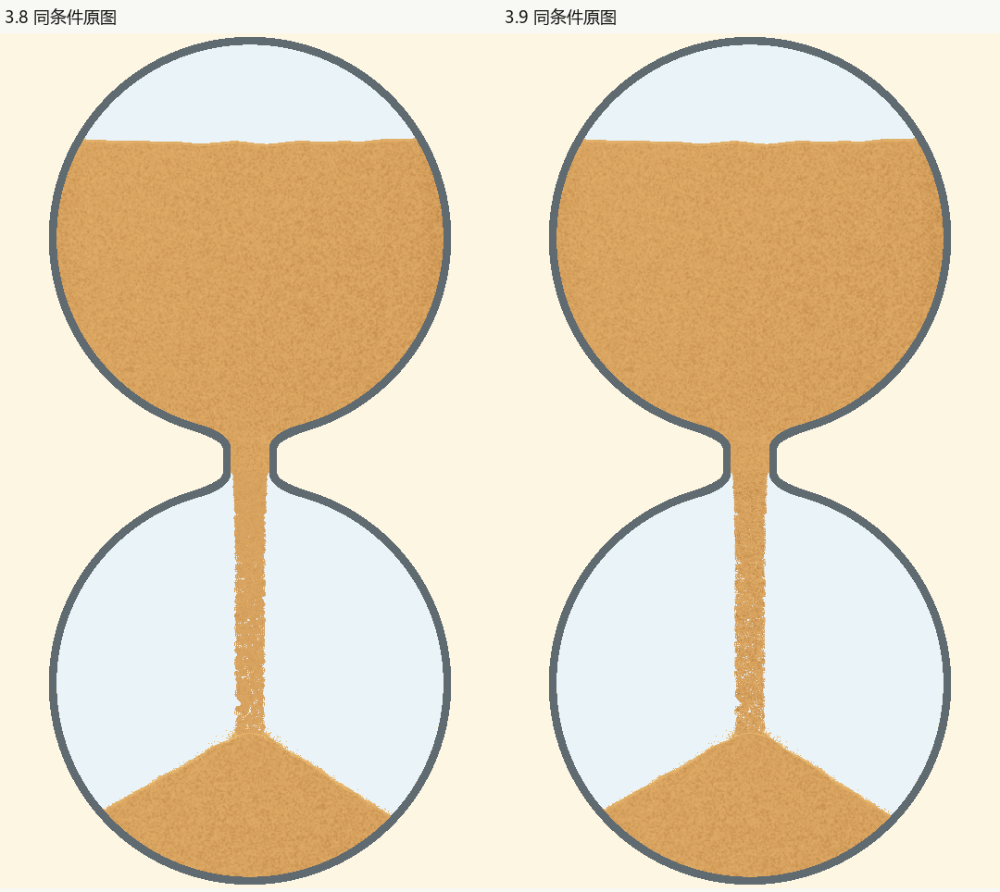

3.9：细沙材质与落点遮挡
2026-10-23。本轮目标是减少沙柱的大圆团、平板及孔洞印象，让流动沙与上下静止沙体更协调，并修复复审发现的堆内亮弧。正式证据绑定最终3.9源码；放行状态见当前决定，摘要与检查见本版记录。
实际变化
沿用真实粒子的位置、数量和生命周期，在每颗图元内部使用出生后固定的微粒方向及偏移，按实际图元尺寸采样同一沙材质，去掉把细粒包成大圆团的父级圆形遮罩。没有逐帧随机挖洞或整束横摆。颈宽、100%容量及原轨迹保持3.8规则。

独立复审发现1秒快速涨堆会把仍存活的落点闪光与飞溅颗粒埋入沙堆；旧绘制层仍将它们画在表面之上，形成多层水波亮弧。现在以实际当帧堆面过滤完全埋住的绘制图元，仍露在坡面外的部分保留。飞溅的物理数组、轨迹和数量不变。

动态证据
5秒原速实录 · 50秒原速实录，均含暂停、恢复、末1%及余砂落定。录像来自真正隐藏的PC窗口和独立设置目录，无插帧。
动态复审实际解码并检查开局落点、稳态、暂停、恢复、末段及落定的关键连续窗口，并核对原生540×924画面；未声称完整播放所有录像。独立动态审核原记录保存具体范围与限制。
| 项目 | 证据与标准 |
|---|---|
| 材质、孔隙与边缘 | 默认、最细、最粗及六配色原图；正常尺寸能辨认细粒，未出现大圆团串、整宽空层或新横向接缝。覆盖率仅作辅助；粗档平均覆盖仍须低于既有实心杆拒绝阈值。 |
| 真实连续性 | 6组轨迹检查及实际局部像素位移；微粒形态跟随真实粒子，暂停不重新播种。与3.8同条件55张阶段图逐项核对物理数组、沙量、几何及变化区域外像素。 |
| 上沙、颈部与出口 | 400×800的55张、高分1080×1848的17张及回退4张；核对相邻连接，颈宽函数及质量账本保持不变。 |
| 落点、近满与收尾 | 5/50秒实录及固定49秒几何的接收层开关负对照；完全埋住的亮弧消失，贴当前表面的细亮边保留。计时归零与最终落定分别检查。 |
| 设置与故障回退 | 金沙、黑沙各取沙纹浓淡0与0.7，实际沙柱内部像素有差异而物理数组不变；材质缺失或Mesh创建失败均保留Line回退。 |
最细原图 · 最粗原图 · 六配色 · 浓淡端点 · 各时长 · 相邻状态 · 5秒收尾 · 50秒收尾


PC工作量
相同1080×1848、50秒周期、25秒起点、同种子，每版3轮×300帧。基线为已发布3.8提交a7707a8，最终3.9单独测量；包含更新、绘制和GPU完成等待，排除取图与编码。三轮分别满足原预算：平均≤16.67ms、最慢1%平均≤20ms、最慢帧≤50ms。
| 指标 | 3.8 | 3.9 |
|---|---|---|
| 平均耗时 | 4.795ms | 4.732ms |
| 最慢1%平均耗时 | 10.018ms | 7.052ms |
| 最慢帧 | 11.194ms | 7.388ms |
此对照只说明当前PC工作量仍在原预算内，不据此声称稳定提速或实际屏幕FPS。
反例、限制与审核
失败候选、问题等级和修复复审。所有被拒绝的原图保留，未重存旧基线。整体沙流仍大致竖直，局部有细孔；本轮没有改变发射与堆积模型。5秒首次落地后沙堆上升偏快是保留的既有P2，不能将本轮材质通过解释为整套沙漏已无问题。
未检查Android、MuMu、音频、真实屏幕刷新、10小时完整过程及全部配色的完整动态过程。当前版本只在PC上验证。